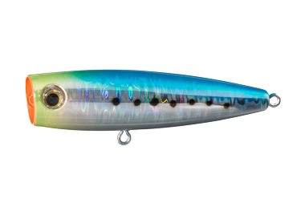
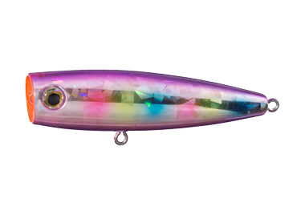
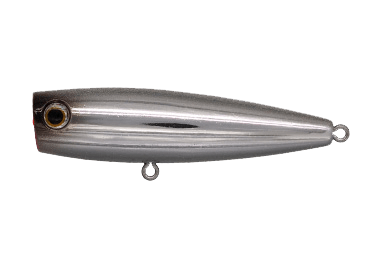
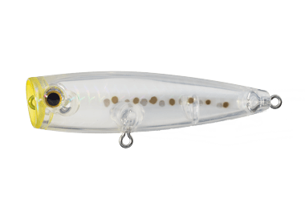

ポップクイーンF80
（POP QUEEN F80）
ポップクイーンF80（POP QUEEN F80）はMaria（マリア）のフローティングポッパーです。
ソルト用ポッパーの定番ポップクイーンを、ライトゲームにも使えるサイズにした80mmモデル。空気抵抗の少ない弾丸形状とウェイトバランスによる「クラス最強のぶっ飛び性能」で、小さなポッパーでも沖の魚まで届かせられるのが最大の魅力です。

画像出典:マリア公式HP
スペック
- メーカー
- Maria（マリア）
- タイプ
- フローティングポッパー
- 全長
- 80mm
- 自重
- 14g
- 潜行水深
- 0cm（水面）
- フック
- #4
- リング
- ファイターズリング #4
- カラー
- 全6色
- ターゲット
- シーバス・チヌ（クロダイ）・小型青物・メッキなど
▼今すぐチェック

ポップクイーンF80の特徴
小さくてもよく飛び、水面のバイトが見て楽しい小型ポッパー
-
クラス最強をうたう「ぶっ飛び」性能
空気抵抗の少ない弾丸形状とウェイトバランスで、80mm・14gの小型ポッパーながら飛距離を出せる設計。小型ポッパーの弱点になりやすい飛距離を補い、少し沖のボイルにも届かせやすい。
-
ルアーの位置が分かりやすい視認性カラー
ルアーの位置を把握しやすく、水面で魚が出る瞬間を見て楽しめる視認性重視のカラーを展開。ポッパーの醍醐味である「水面が割れる瞬間」をしっかり目で追える。
-
ライトタックルで扱えるサイズ感
14gという重さは、シーバスロッドやチヌ用のトップゲームロッドで投げやすいクラス。港湾や河口、干潟まで、身近なフィールドでポッパーの釣りを始めやすいサイズだ。
ポップクイーンF80の使い方
基本はポッピング。ロッドを軽くあおってカップで水をつかみ、ポコッという音と小さなスプラッシュで誘う。数回ポップさせたら少しステイを入れ、追ってきた魚に食わせの間を作るのが基本のリズムだ。
チヌやシーバスが水面のベイトを追っている時は、ロッドを細かく動かして首を振らせながら連続でポップさせると反応が出やすい。魚が出てもすぐに合わせず、重みが乗ってから巻き合わせるとフッキングが決まりやすいです。
ポップクイーンF80の得意な状況
夏〜秋の港湾や河口、干潟で、ベイトが水面に追われている状況が最大の出番。
ベイトが小さめで大きいポッパーには反応しない時や、チヌ・シーバスが水面を意識しているシャローで、ライトタックルのまま水面の釣りを楽しみたい場面で選びたい1本です。
ワンポイント
水が澄んでいて魚がルアーを見切る時は、クリア系の「生シラス」や「コーラルクリア」に替えるとバイトが続くことがあります。
サイズを上げてアピールしたい時は同じフローティングのF105、荒れた磯で使いたい時はシンキングのS80へ持ち替えると組み立てやすいです。
ポップクイーンシリーズの使い分け
| モデル | 全長／自重 | 得意な場面 |
|---|---|---|
| F50 | 50mm／5g | フローティング・ライトゲーム向けの最小サイズ |
| F80 | 80mm／14g | フローティング・よく飛ぶ小型サイズ（本記事のモデル） |
| S80 | 80mm／19g | シンキング・荒れた磯での食わせ |
| F105 | 105mm／25g | フローティング・シーバスから青物まで使える中型サイズ |
| S105 | 105mm／30g | シンキング・荒れた磯での広範囲サーチ |
| F130 | 130mm／37g | フローティング・青物向けの大型サイズ |
| F160 | 160mm／65g | フローティング・大型青物狙いのヘビーモデル |
| F200 | 200mm／100g | フローティング・ヘビータックルのビッグゲーム |
ポップクイーンはフローティングのF50〜F200に、シンキングのS80・S105を加えたシリーズ。F80は同じ公式ページで紹介されているF50とセットの「ライトゲーム対応の小型ポッパー」で、身近な港湾や河口で使いやすいサイズを担う。
オススメカラー
ポップクイーンF80は全6色展開。港湾・河口のトップゲームでオススメのカラーを厳選して紹介します。

020 アピールイワシ定番イワシの「見えにくい」を解消した視認性カラー。背中のフラッシングでアピールもアップ。

014 ケイムラコットンキャンディ透過する背中と腹部で光を乱反射。ケイムラ効果で寄せるだけでなく食わせる要素も持つ。

018 ギラピカグロー強い明滅のフラッシングに夜光ベリーを加えたハイアピール色。濃いベイトの中でも目立つ。

007 生シラス光の透過で見せるシークレットカラー。クリアカラーに偏食するシラスパターンに。
画像出典:マリア公式HP
ポップクイーンF80に似ているルアー
-
 ポップクイーンS80
マリア
詳細はこちら＞
ポップクイーンS80
マリア
詳細はこちら＞
同じ80mmのシンキングモデル（19g）。波が高い磯でF80が水面から飛び出してしまう時は、水面に張り付くS80に持ち替えると釣りを続けやすい。
-
 チュパゾー60
ブルーブルー
詳細はこちら＞
チュパゾー60
ブルーブルー
詳細はこちら＞
チヌのトップゲームで定番のペンシルベイト。ポッパーで出たのに乗らない時、首振りで見せるペンシルに替えて食わせる組み合わせが使いやすい。
-
 ポップクイーンF105
マリア
詳細はこちら＞
ポップクイーンF105
マリア
詳細はこちら＞
ひと回り大きい105mm・25gのフローティングモデル。ベイトが大きい時や、青物も混じる場面でアピールを上げたい時に。